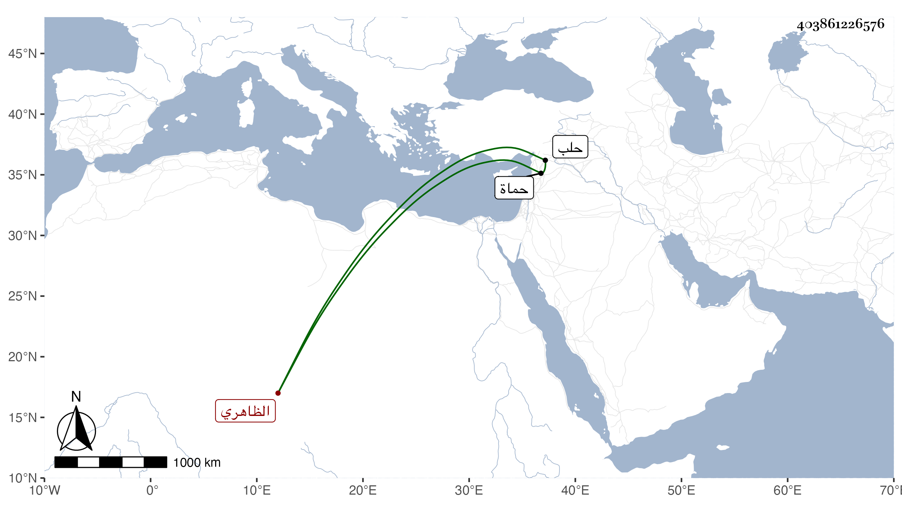

0902Sakhawi.DawLamic.ITO20230111-ara1.EIS1600.403861226576
Biography ID: 403861226576
1074
يشبك بن إزدمر الظاهري برقوق . ولد ببلاد جركس وقدم مع أبيه فاشتراهما الظاهر في أول أمره وقدم والده ثم عمل ابنه خاصكيا إلى أن أظهر في وقعة تمر من الشجاعة والإقدام ما اشتهر وحمل بعد قتل أبيه في المعركة إلى تمر وبه نيف عن ثلاثين جرحا ما بين ضربة سيف وطعنة رمح فأعجبه وأمر بمداواته والتلطف به حتى تعافى فاحتال حتى فر وعاد إلى الناصر فعمله أمير عشرة ولا زال حتى قدمه وعمله رأس نوبة النوب ثم ولي نيابة حماة ثم حلب في أيام نوروز الحافظي لأنه كان من حزبه إلى أن ظفر بهما المؤيد فقتلهما مع غيرهما في سنة سبع عشرة ، وكان أميرا جليلا جميلا شجاعا كريما مقداما رأسا في جذب القوس والرمي يضرب به المثل في ذلك صاهر تغرى بردى الأتابكي على إحدى بناته الصغار وقد ذكره شيخنا في إنبائه فلم يزد على قوله كان مشهورا بالشجاعة والفروسية وتوقف في قول العيني كان ظالما لم يشتهر عنه خير بأنه باشر نظر الشيخونية قال ورأيت أهلها يبتهلون بالدعاء له والشكر منه .
